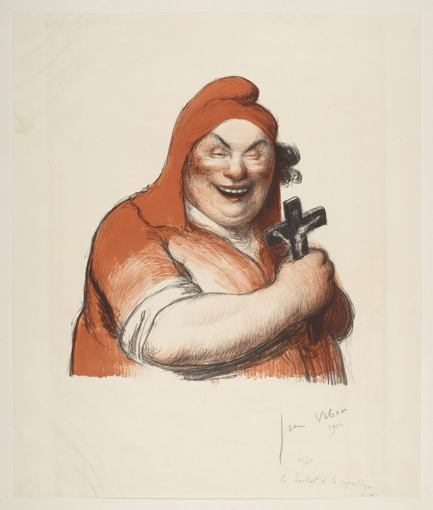

FR · 1904O chocalho da República · litografia.
O chocalho da República
Descrição curta
França · 1904 · litografia · regime contra-alegoria.
Descrição longa
Ficha do corpus iconocrático para O chocalho da República: alegoria feminina como tecnologia visual do Estado, classificada no regime contra-alegoria.
Fonte & proveniência
- Crédito
- Imagem do corpus ICONOCRACIA: O chocalho da República.
- Direitos
- Uso acadêmico e curatorial; verificar direitos junto à instituição detentora antes de reutilização comercial.
- Licença
- Todos os direitos reservados salvo indicação específica da fonte.
Dados canônicos
Esta ficha é gerada a partir de data/corpus.json. Última geração: 2026-06-24.